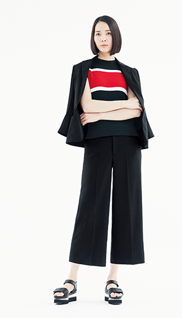

春らしいピンクはコーラルで甘すぎず凛とした美しさを引き立てて。細身シルエットのセットアップは、ウォッシャブル。袖をまくったり、9分丈のパンツで華奢なパーツを見せて女性らしく。
愛らしい花柄の黄色のスカートを主役に。ふんわりとしたシルエットは大人のスウィートネスを引き出す。落ち着いた光沢の黒のノースリーブブラウスでシンプルさとエッジを加えモードな気分も。
シルエットの妙を楽しみたいコーディネートは、ハイウエストの太めのパンツにゆとりあるスリーブレスTシャツをイン。おしゃれ上級者こそ、小物使いは大胆になびかせたプリントスカーフを。
ビジネスシーンには手放せないジャケットにデニムシャツを合わせて上品なカジュアル感を醸し出して。アシンメトリーのスリットが入ったストライプスカートや、赤のヒールが新鮮な色気を加える。
ボーダーニットも組み合わせ次第でオフィスにマッチ。9分袖のロングコートをさらりと羽織ればきちんと感へと早変わり。ノーカラー、ひとつボタンと気負いのない雰囲気も手軽なアウター。
プリントブラウスは、濃紺のデニムと組み合わせてカジュアルシックに仕上げて。ベルトでウエストをマークしてペプラム風に着こなすと華やかムードに仕上がる。70’s気分のバッグでトレンド感も。
真夏まで着られる洗濯機で洗えるセットアップは、春らしい淡いグレーをチョイス。シンプルにブラウスと、長いチェーンネックレスだけでノーブルな装いに。安定感のある太いヒールでチアフルに。
腕をきれいに見せると人気のフレアスリーブトップスは、爽やかなダンガリーブルーを。白のスカートをあわせてブレーンなコーディネートで清楚な印象をキープし、好感度の高い着こなしにまとめる。

ゆるりとした落ち感が美しいトレンチコートを主役に颯爽と。羽織り感覚ながら本格的なディテールが、カジュアルになりすぎず重宝。裾から覗くヴィヴィッドなスカートは手洗いOK。
短めのガウチョパンツには、フェミニンかつきちんとしたONスタイルをつくるツイードジャケットが最適。白のノーカラーならインナーを選ばず春夏通して出番もたっぷり。肩からかけて軽やかに。
ミモレ丈のプリーツスカートはシルエットの美しさで上品なコーディネートに。鮮やかな青×白のストライプシャツをインして、すっきりとしたIラインが完成。襟から覗くパールでレディな気分へ。
大きな花柄がひときわ目を惹く華やかでキュートなスカートを、ネイビーのニットできりりと引き締める。愛らしいスタイルも全体をブルートーンにまとめシルバーのパンプスを添えて大人っぽく。
大人のアースカラーを意識した、ベージュ×ブラックの組み合わせ。ゆったりしたオーバーサイズはマチュアなリッチ感が漂う。マットゴールドのバングルで上質なアクセサリー使いを楽しんで。
カーキのワントーングラデーションは、黒よりモダンで品が漂う。アクセサリーはシンプルに色で着こなしの深みを表現して。ブラウスは前だけをインし、こなれた印象に。
清々しいリネンのツイードのジャケットはハーフスリーブで一層爽やか。全体を白基調にまとめクリーンに。アシンメトリーなジップアップがユニークで、ライダース風の襟はひと味違う装いをつくる。
ネイビーのシンプルなワンピースは成熟した大人の女性ならではの一着。１枚でもさまになり時短と美しさを兼ね備え、凛とした佇まいを引き立ててくれる。アクセサリーは繊細なゴールドをきらりと。
セットアップも、インパクト溢れるストライプでキャッチーなスタイリングを。素材感を楽しむおしゃれは夏らしいリラクシーな気分のリネンがぴったり。ワイドのフルレングスパンツも新鮮な印象。

ウォッシャブルのセットアップは、ガウチョパンツの一歩先行くスタイル。赤と白のラインが爽やかなスポーティーなニットに、スニーカー感覚で履き心地の良いベルクロサンダルでアクティブモードへ。